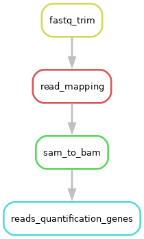
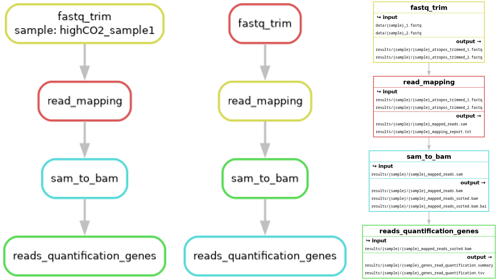

Making a more general-purpose Snakemake workflow
Learning outcomes
After having completed this chapter you will be able to:
- Create rules with multiple inputs and outputs
- Make the code shorter and more general by using placeholders and
wildcards - Visualise a workflow DAG
- (Check a workflow’s behaviour)
Material
Advice and reminders
In each rule, you should try (as much as possible) to:
- Choose meaningful rule names
- Use placeholders and
wildcards- Choose meaningful wildcard names
- You can use the same wildcard names in multiple rules for consistency and readability, but remember that Snakemake will treat them as independent
wildcardsand their values will not be shared: rules are self-contained andwildcardsare local to each rule (see this very nice summary onwildcards)
- Use multiple (named) inputs/outputs when needed/possible
- Use rules dependency, with the syntax
rules.<rule_name>.output- If you use named outputs (recommended), the syntax becomes
rules.<rule_name>.output.<output_name> - If you use numbered outputs (don’t), the syntax becomes
rules.<rule_name>.output[n], withnstarting at 0 (Python indexing)
- If you use named outputs (recommended), the syntax becomes
Testing your workflow’s logic
- If you have a doubt, do not hesitate to test your workflow logic with a dry-run (
-n/--dry-run/--dryrunparameter):snakemake -c 1 -n <target>. Snakemake will then show all the jobs needed to generate<target>as well as a reason field explaining why each job is required - To visualise the exact commands executed by each job (with placeholders and
wildcardsreplaced by their values), run snakemake with the-p/--printshellcmdsparameter:snakemake -c 1 -p <target> - These two parameters are often used together to check an entire workflow:
snakemake -c 1 -n -p <target>
Data origin
The data you will use during the exercises was produced in this work. Briefly, the team studied the transcriptional response of a strain of baker’s yeast, Saccharomyces cerevisiae, facing environments with different concentrations of CO2. To this end, they performed 150 bp paired-end sequencing of mRNA-enriched samples. Detailed information on all the samples are available here, but just know that for the purpose of the course, we selected 6 samples (3 replicates per condition, low and high CO2) and down-sampled them to 1 million read pairs each to reduce computation time.
Exercises
One of the aims of today’s course is to develop a simple, yet efficient, workflow to analyse bulk RNAseq data. This workflow takes reads coming from RNA sequencing as inputs and produces a list of genes that are differentially expressed between two conditions. The files containing reads are in FASTQ format and the final output will be a tab-separated file containing a list of genes with expression changes, results of statistical tests…
In this series of exercises, you will create the workflow ‘backbone’, i.e. rules that are the most computationally expensive, namely:
- A rule to trim poor-quality reads
- A rule to map trimmed reads on a reference genome
- A rule to convert and sort files from SAM format to BAM format
- A rule to count reads mapping on each gene
Designing and debugging a workflow
If you have problems designing your Snakemake workflow or debugging it, you can find some help here.
At the end of this series of exercises, your workflow should look like this:

the end of the session
Downloading data and setting up folder structure
In this part, you will download the data and start building the directory structure of your workflow according to the official recommendations. You already started doing so in the previous series of exercises and at the end of the course, it should resemble this:
│── .gitignore
│── README.md
│── LICENSE.md
│── benchmarks
│ │── sample1.txt
│ └── sample2.txt
│── config
│ │── config.yaml
│ └── some-sheet.tsv
│── data
│ │── sample1.fastq
│ └── sample2.fastq
│── images
│ │── dag.png
│ │── filegraph.png
│ └── rulegraph.png
│── logs
│ │── sample1.log
│ └── sample2.log
│── results
│ │── DEG_list.tsv
│ │── sample1
│ │ └── sample1.bam
│ └── sample2
│ └── sample2.bam
│── resources
│ │── Scerevisiae.fasta
│ │── Scerevisiae.gtf
│ └── genome_indices
| │── Scerevisiae_index.1.ht2
| │── Scerevisiae_index.2.ht2
| │── Scerevisiae_index.3.ht2
| │── Scerevisiae_index.4.ht2
| │── Scerevisiae_index.5.ht2
| │── Scerevisiae_index.6.ht2
| │── Scerevisiae_index.7.ht2
| └── Scerevisiae_index.8.ht2
└── workflow
│── Snakefile
│── envs
│ │── tool1.yaml
│ └── tool2.yaml
│── rules
│ │── module1.smk
│ └── module2.smk
└── scripts
│── script1.py
└── script2.R
For now, the main thing to remember is that code should go into the workflow subfolder and the rest is mostly input/output files. The only exception is the config subfolder, but it will be explained later. All output files generated in the workflow should be stored under results/.
Let’s download the data, uncompress them and build the first part of the directory structure. Make sure you are connected to server, then run this in your VScode terminal:
1 2 3 4 | |
In snakemake_rnaseq/, you should see two subfolders:
data/, which contains data to analyseresources/, which contains retrieved resources, here assembly, genome indices and annotation file of S. cerevisiae. It may also contain small resources delivered along with the workflow
We also need to create the other missing subfolders and the Snakefile:
1 2 | |
What does -p do?
The -p parameter of mkdir make parent directories as needed and does not return an error if the directory already exists.
Snakefile marks the workflow entry point. It will be automatically discovered when running Snakemake from the root folder, here snakemake_rnaseq/.
Using a Snakefile from a non-default location
Snakemake can use a Snakefile from a non-default location thanks to the -s/--snakefile parameter:
snakemake -c 1 -s <Snakefile_path> <target>
However, it is highly discouraged as it hampers reproducibility.
Relative paths in Snakemake
All paths in a Snakefile are relative to the working directory in which the snakemake command is executed:
- If you execute Snakemake in
snakemake_rnaseq/, the relative path to the input files in the rule isdata/<sample>.fastq - If you execute Snakemake in
snakemake_rnaseq/workflow/, the relative path to the input files in the rule is../data/<sample>.fastq
If you followed the advice at the top of this page, Snakemake should create all the other missing folders by itself, so it is time to create the rules mentioned earlier. If needed, you can check here for a few pieces of advice on workflow design.
‘bottom-up’ or ‘top-down’ development?
Even if it is often easier to start from final outputs and work backwards to first inputs, the next exercises are presented in the opposite direction (first inputs to last outputs) to make the session easier to understand.
Important: do not process all the samples!
Do not try to process all the samples yet, even if we asked you to use wildcards. For now, choose only one sample (which means two .fastq files because reads are paired-end). You will see an efficient way to process a list of files in the next series of exercises.
Creating a rule to trim reads
Usually, when dealing with sequencing data, the first step is to improve read quality by removing low quality bases, stretches of As and Ns and reads that are too short.
Trimming sequencing adapters
In theory, trimming should also remove sequencing adapters, but you will not do it here to keep computation time low and avoid parsing other files to extract adapter sequences.
You will use atropos to trim reads. The first part of the trimming command is:
atropos trim -q 20,20 --minimum-length 25 --trim-n --preserve-order --max-n 10 --no-cache-adapters -a "A{{20}}" -A "A{{20}}"
Explanation of atropos parameters
-q 20,20: trim low-quality bases from 5’ and 3’ ends of each read before adapter removal--minimum-length 25: discard trimmed reads that are shorter than 25 bp--trim-n: trim Ns at the ends of reads--preserve-order: preserve order of reads in input files--max-n 10: discard reads with more than 10 Ns--no-cache-adapters: do not cache adapters list as ‘.adapters’ in the working directory-a "A{{20}}" -A "A{{20}}": remove series of 20 As in adapter sequences (-afor first read of the pair,-Afor the second one)- The usual command line syntax is
-a "A{20}". Here, brackets were doubled to prevent Snakemake from interpreting{20}as a wildcard
- The usual command line syntax is
Now, a few questions might come to mind when you need to use specific software in a workflow:
- Is the software already installed in the machine I am working on?
- If not, how do I install it quickly and easily?
- How can I make sure that everyone using my workflow has it installed? With the exact same version?!
To solve this problem, Snakemake can use package managers (more on this later) or container managers, like docker and apptainer, to deploy rule-specific environments. The latter is done with the container directive and its value should be the location of the image: it can be either a local path or a remote URL. Allowed URLs are everything supported by apptainer, including shub:// and docker://.
Exercise:
- Complete the atropos command given above with parameters to specify inputs (files to trim) and outputs (trimmed files)
- You can find information on how to use
atroposand its parameters withatropos trim -hor you can look at the tip below
- You can find information on how to use
- Implement a rule containing your command to trim reads contained in a .fastq files
- You will need a rule name, and the
input,output,containerandshelldirectives - The container image can be found at
https://depot.galaxyproject.org/singularity/atropos%3A1.1.32--py312hf67a6ed_2
- You will need a rule name, and the
atropos inputs and outputs
- .fastq files to trim are located in
data/ - Paths of files to trim (i.e. input files, in FASTQ format) are specified with the parameters
-pe1(first read) and-pe2(second read) - Paths of trimmed files (i.e. output files, also in FASTQ format) are specified with the parameters
-o(first read) and-p(second read)
Answer
This is one way of writing this rule, but definitely not the only way (this is true for all the rules presented in these exercises):
1 2 3 4 5 6 7 8 9 10 11 12 13 14 15 16 17 18 19 20 21 | |
There are three interesting things happening here:
- We added a comment between double quotes under the rule name (L2-7). In Python, it is called a docstring. While it is not mandatory, it is good practice (and very recommended) to write docstrings to explain what a rule does, what are its inputs, outputs, parameters…
- We used the
{sample}wildcards twice in output paths (L12-13). This is because we prefer to have all files from a single sample in the same directory - We used a backslash
\at the end of L18-19 to split a very long command in smaller lines. This is purely ‘cosmetic’ but it avoids very long lines that are painful to read, understand and debug…
Exercise: If you had to run the workflow by specifying only one output, what command would you use?
Answer
To process the sample highCO2_sample1, for example, you would use:
snakemake -c 1 -p --sdm=apptainer results/highCO2_sample1/highCO2_sample1_atropos_trimmed_1.fastq
- You don’t need to ask for the two outputs of the rule: asking only for one will still trigger execution, but the workflow will complete without errors if and only if both outputs are present. Like with intermediary files, this property also helps reducing the number of targets to write in the snakemake command used to execute the workflow!
- Do not forget to add
--sdm=apptainer, otherwise Snakemake will not pull the image and the command will be executed in the default environment (which will most likely lead to a crash). Don’t worry if the first execution is somewhat slow: Snakemake has to download the image. The next ones will be much faster as the images are cached
Creating a rule to map trimmed reads onto a reference genome
Once the reads are trimmed, the next step is to map those reads onto the species genome (S. cerevisiae strain S288C) to eventually obtain read counts. The reference assembly used in this exercise is RefSeq GCF_000146045.2 and was retrieved via the NCBI website. You will use HISAT2 to map reads.
HISAT2 genome index
To align reads to a genome, HISAT2 relies on a graph-based index. To save some time, we built the genome index for you, using:
hisat2-build -p 24 -f resources/Scerevisiae.fasta resources/genome_indices/Scerevisiae_index
-p: number of threads to use-f: genomic sequence in FASTA formatScerevisiae_index: global name shared by all the index files
Genome indices can be found in resources/genome_indices/.
The first part of the mapping command is:
hisat2 --dta --fr --no-mixed --no-discordant --time --new-summary --no-unal
Explanation of HISAT2 parameters
--dta: report alignments tailored for transcript assemblers--fr: set alignment of -1, -2 mates to forward/reverse (position of reads in a pair relatively to each other)--no-mixed: remove unpaired alignments for paired reads--no-discordant: remove discordant alignments for paired reads--time: print wall-clock time taken by search phases--new-summary: print alignment summary in a new style--no-unal: suppress SAM records for reads that failed to align
Exercise:
- Complete the HISAT2 command given above with parameters to specify inputs and outputs
- You will need 2 inputs, 2 outputs (in 2 different formats) and the genome indices mentioned above (should they be considered as inputs?)
- You can find more information on how to use HISAT2 and its parameters with
hisat2 -hor you can look at the tip below
- You can find more information on how to use HISAT2 and its parameters with
- You will need 2 inputs, 2 outputs (in 2 different formats) and the genome indices mentioned above (should they be considered as inputs?)
- Implement a rule containing your command to map trimmed reads contained in .fastq files
- You will need a rule name, and the
input,output,containerandshelldirectives - The container image can be found at
https://depot.galaxyproject.org/singularity/hisat2%3A2.2.1--hdbdd923_6
- You will need a rule name, and the
HISAT2 inputs and outputs
- Paths of trimmed files (i.e. input files) are specified with the parameters
-1(first read) and-2(second read) - Basename of genome indices (binary format) is specified with the parameter
-x. The files have a shared name ofresources/genome_indices/Scerevisiae_index, which is the value you need to use for-x - Path of mapped reads files (i.e. output file, in SAM format) is specified with the parameter
-S(do not forget the .sam extension at the end of the filename) - Path of mapping report (i.e. output file, in text format) is specified with the parameter
--summary-file
Answer
1 2 3 4 5 6 7 8 9 10 11 12 13 14 15 16 17 18 | |
Exercise: What do you think about the value of -x?
Answer
Something very interesting is happening here: to run, HISAT2 requires several genome index files. As such, they could (should?) be considered as inputs… and this is a problem:
- On one hand, the
-xparameter only accepts strings containing a file path and common name. This means that if you were to manually add all the indices as inputs, HISAT2 would not recognize them… and crash! - On the other hand, if you were add the value of
-xas input, Snakemake would look for a file calledresources/genome_indices/Scerevisiae_index… and crash because this file doesn’t exist!
This highlights the fact that inputs must be files and this is why we directly added the value of -x in the command. However, this is not very convenient: you will see later a better way to deal with this problem.
Using the same sample as before (highCO2_sample1), the workflow can be run with:
snakemake -c 1 --sdm=apptainer -p results/highCO2_sample1/highCO2_sample1_mapped_reads.sam
That being said, we recommend not to run it for the moment, because this step is the longest of the workflow (with current settings, it will take ~6 min to complete). Still, if you want to run it now, you can, but you should launch it and start working on the next rules while it finishes.
Creating a rule to convert and sort .sam files to BAM format
HISAT2 only outputs mapped reads in SAM format. However, most downstream analysis tools use BAM format, which is the compressed binary version of SAM format and, as such, is much smaller, easier to manipulate and transfer and allows a faster data retrieval. Additionally, many analyses require .bam files to be sorted by genomic coordinates and indexed because sorted .bam files can be processed much more easily and quickly than unsorted ones. Operations on .sam and .bam files are usually performed with Samtools.
What are alignment formats?
More information on alignment formats can be found on samtools github repository.
We wrote a single rule performing all these operations for you:
1 2 3 4 5 6 7 8 9 10 11 12 13 14 15 16 17 18 | |
Explanation of Samtools parameters
- You can find information on how to use Samtools and its parameters with
samtools --help samtools view:-b: create an output in BAM format-o: path of output file
samtools sort:-O bam: create an output in BAM format-o: path of output file
samtools index:-b: create an index in BAI format
Exercise: Copy this rule in your Snakefile. Don’t forget to update the output values to match the ones you used in your previous rules. Do you notice anything surprising in this rule?
Answer
Let’s start with a quick breakdown of the shell directive:
- L15:
samtools viewconverts a file in SAM format to BAM format - L16:
samtools sortsorts a .bam file by genomic coordinates - L17:
samtools indexindexes a sorted .bam file. The index must have the exact same basename as its associated .bam file; the only difference is that it finishes with the extension.bam.baiinstead of.bam
The interesting thing is that so far, all the rules had only one command in the shell directive. In this rule, there are three commands grouped together, each with their own inputs and outputs. This means two things:
- We could have split this rule into 3 separate rules with dependencies. There is no official guideline on whether to split rules like this, but a good rule of thumb is: does it make sense to run these commands together? Is it not too computationally expensive (time, memory, CPU) to run these rules together?
{output.bam}and{output.bam_sorted}are outputs ofsamtools viewandsamtools sort… But they are also inputs ofsamtools sortandsamtools index! This means that files that are created by a command can instantly be re-used in subsequent commands within a same rule!
Exercise: Do you see any drawbacks to using a rule like this?
Answer
When Snakemake has a problem and crashes, it removes the current rule outputs to avoid further computation with corrupted files. This means that if the first two commands complete but the last one (here, samtools index) fails and doesn’t produce the expected output, Snakemake will remove all the outputs, including those that were created without error (here, {output.bam} and {output.bam_sorted}), causing a waste of time and money
Using the same sample as before (highCO2_sample1), the workflow can be run with:
snakemake -c 1 -p --sdm=apptainer results/highCO2_sample1/highCO2_sample1_mapped_reads_sorted.bam
Creating a rule to count mapped reads
Most of analyses happening downstream the alignment step, including Differential Expression Analyses, are starting off read counts, by exon or by gene. However, you are still missing those counts!
Genome annotations
- To count reads mapping on genomic features, we first need a definition of those features, called annotations. Here, we chose one of the best-known model organism, S. cerevisiae, which has been annotated for a long time. Its annotations are easily findable on the NCBI or the Saccharomyces Genome Database. If an organism has not been annotated yet, there are ways to work around this problem, but this is an entirely different field that we won’t discuss here!
- You should also know that there are two main annotations format: GTF and GFF. Former is lighter and easier to work with, so this is what you will use
Chromosome names must match between files
If you are working with genome sequences and annotations from different sources, remember that they must contain matching chromosome names, otherwise counting will not work, as the counting software will not be able to read counts to match exon/gene locations.
We already wrote a rule to count reads mapping on each gene of the S. cerevisiae genome using featureCounts:
1 2 3 4 5 6 7 8 9 10 11 12 13 14 15 16 17 18 19 | |
Explanation of featureCounts command
- You can find information on how to use featureCounts and its parameters with
featureCounts -h -t: specify on which feature type to count reads-g: specify if and how to gather feature counts. Here, reads are counted by features (exon) (-t) and exon counts are gathered by ‘meta-features’ (genes) (-g)-s: perform strand-specific read counting- Strandedness is determined by looking at mRNA library preparation kit. It can also be determined a posteriori with scripts such as infer_experiment.py from the RSeQC package
-p: specify that input data contain paired-end reads--countReadPairs: count read pairs instead of reads-B: only count read pairs that have both ends aligned-C: do not count read pairs that have their two ends mapping to different chromosomes or mapping on same chromosome but on different strands--largestOverlap: assign reads to meta-feature/feature that has largest number of overlapping bases--verbose: output verbose information, such as unmatched chromosome/contig names-F: specify format of annotation file-a: specify path of file containing annotations (i.e. input files, in GTF format)-o: specify path of file containing count results (i.e. output file, in tsv format)- Paths of sorted .bam file(s) (i.e. input file(s)) are not specified with an parameter, they are simply added at the end of the command
Exercise: Copy this rule in your Snakefile. What does L18 do? Why did we add it?
Answer
The mv command can be used to move or rename a file. Here, it does the latter. featureCounts outputs a second, separate file (in tsv format) containing summary statistics about read counting, with the name <output_name>.summary. For example, if the output is test.tsv, summary will be printed in test.tsv.summary. However, there is no parameter available to choose the filename, so if we need this file as an output, we have to manually rename it.
It would be interesting to know what is happening when featureCounts runs. This is where the log directive comes into play!
(Optional) Exercise: If you have time, add the log directive to the rule. Don’t forget to update the directive values to match the ones you used in your previous rules. You can check out slides 27-30 of the presentation (available here) for information on this directive.
Logs
- The
logdirective must contain the samewildcardsas theoutputdirective, heresample - Logs need to be handled manually, so you need to redirect what is produced by featureCounts to the log file. You can redirect both
stdoutandstderrstreams with&> {log}at the end of the command
Answer
1 2 3 4 5 6 7 8 9 10 11 12 13 14 15 16 17 18 19 20 21 | |
Running the whole workflow
Exercise: If you have not done it after each step, run the entire workflow on your sample of choice. What command will you use to run it? Once Snakemake has finished, check the log of rule reads_quantification_genes. Does it contain anything? How many read pairs were assigned to a feature?
Answer
Because all rules are chained together, you only need to specify one final output to trigger the execution of all previous rules. Using the same sample as before (highCO2_sample1). You can add the -F parameter to force an entire re-run, which should take ~10 min.:
snakemake -c 1 -F --sdm=apptainer -p results/highCO2_sample1/highCO2_sample1_genes_read_quantification.tsv
cat logs/highCO2_sample1/highCO2_sample1_genes_read_quantification.log
featureCounts, its inputs and outputs… and the number of read pairs successfully assigned to a gene; with highCO2_sample1, 817894 read pairs (83.8% of total) were assigned:
1 2 3 4 5 6 7 8 9 10 11 12 13 14 15 16 17 18 19 20 21 22 23 24 25 26 27 28 29 30 31 32 33 34 35 36 37 38 39 40 41 42 43 44 45 46 47 48 49 50 | |
(Optional) Exercise: If you have time, check Snakemake’s log in .snakemake/log/. Is everything as you expected, especially wildcard values, input and output names…?
Answer
You can check the logs with:
cat .snakemake/log/<latest_log>
wildcards… were replaced by their actual values. It is identical to what appears on your screen when you run Snakemake.
Visualising the workflow DAG
You have now implemented and run the main steps of the workflow. It is always a good idea to visualise the whole process to check for errors and inconsistencies. Snakemake has a built-in workflow visualisation feature to do this: the --dag parameter, which shows a dependency graph of all the jobs (rules appear once per wildcard value and wildcard value are displayed).
Exercise: Visualise the entire workflow’s Directed Acyclic Graph using --dag. Remember that Snakemake prints a DAG in text format, so you need to pipe its results into the dot command to transform it into a picture with | dot -Tpng > <image_path>.png. Do you need to specify a target to the snakemake command?
Creating a DAG
- Try to follow the official recommendations on workflow structure, which states that images are supposed to go in the
images/subfolderimages/is not automatically created by Snakemake because it isn’t handled as part of an actual run, so you need to create it beforehand. You did this when you set up the workflow structure
- If you already computed all outputs of the workflow, steps in the DAG will have dotted lines. To visualise the DAG before running the workflow, add
-F/--forceallto the snakemake command to force the execution of all jobs- You can also use
-f <target>to show fewer jobs
- You can also use
The dot command
dotis a part of the graphviz package and is used to draw hierarchical or layered drawings of directed graphs, i.e. graphs in which edges (arrows) have a direction-T: choose image format. Available formats are listed here
Answer
To run the command without target, you can use:
snakemake -c 1 --dag -F | dot -Tpng > images/dag.png
-F parameter to force Snakemake to compute the entire DAG and ensure all jobs are shown. However, you will get a WorkflowError: Target rules may not contain wildcards. error. This makes sense, because if you don’t give a target to Snakemake, it can’t compute the wildcard values. To run the command using the same sample as before (highCO2_sample1), you can target one of the final outputs of the workflow:
snakemake -c 1 --dag -F results/highCO2_sample1/highCO2_sample1_genes_read_quantification.tsv | dot -Tpng > images/dag.png
You should get the following DAG:
the end of the session
An important thing to remember: --dag implicitly activates --dry-run/--dryrun/-n, which means that no jobs are executed during DAG computation.
Snakemake can also create two other graphs:
- A rulegraph, created with the
--rulegraphparameter: dependency graph of all the rules (rules appear only once)snakemake -c 1 --rulegraph -F results/highCO2_sample1/highCO2_sample1_genes_read_quantification.tsv | dot -Tpdf > images/rulegraph.pdf - A filegraph, created with the
--filegraphparameter: dependency graph of all the rules with inputs and outputs (rule appears once,wildcardsare shown but not replaced)snakemake -c 1 --filegraph -F results/highCO2_sample1/highCO2_sample1_genes_read_quantification.tsv | dot -Tjpg > images/filegraph.jpg
Here is a comparison of the different workflow graphs:
